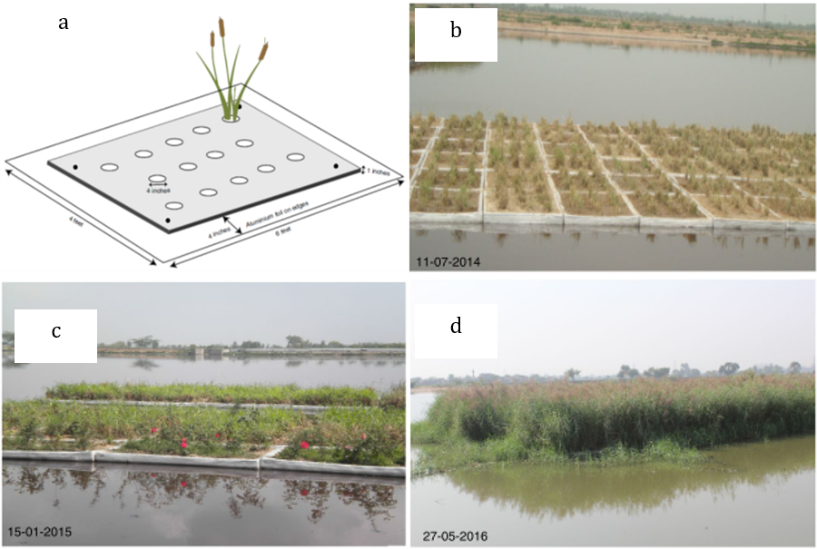

This lecture provides an overview of the applications of nature-based solutions in waste and wastewater treatment. Particularly, this lecture discusses how nature-based solutions can be used to complement engineered infrastructure in waste and wastewater treatment. This lecture also discusses examples of applications of nature-based solutions to address landfill leachate treatment and urban wastewater treatment.
Recognise the value of nature-based solutions in waste management and wastewater treatment
Gain a basic understanding of the principles of designing nature-based solutions for waste management and wastewater treatment.
As the population grows, the challenges of waste and wastewater treatment increases; the generation of waste and wastewater is vast and new types of contamination are emerging. While engineering approaches are used for effectively and safely treating the contamination, a significant portion of waste and wastewater are still entering the environment without treatment. For example, in western Europe 86% of wastewater is treated, in North America it’s 67%, and in south Asia and sub-Saharan Arica only 16% of it is treated (Jones et al. 2021). Pollution from the waste and wastewater sectors, when in excess of the intrinsic self-regulating capability of environments, will build up in the environment and eventually impair ecosystem health and undermine human well-being.
While engineering approaches are key to treating waste and wastewater and to minimising the pollution entering the environment, nature-based solutions provide alternative or complementary approaches. Nature-based solutions can be more cost-effective in treating certain contaminants and provide valuable co-benefits. This is especially beneficial for countries and regions where expensive engineering infrastructures are not available. Table 17.2.1 provides an overview of applications of nature-based solutions in waste and wastewater treatment.
Table 17.2.1: Overview of nature-based solutions in waste and wastewater treatment (Millennium ecosystem assessment 2005)
| Services | Hard engineering options | Nature-based solution | Co-benefits |
|---|---|---|---|
| WASTE TREATMENT |
|
contaminants from the soil, or to reduce their bio- availability
|
|
| WASTEWATER TREATMENT |
|
For urban and suburban source/point source:
For non-point source:
|
|
The two most commonly used nature-based solutions in waste treatment are:
To use constructed wetlands to treat leachate from landfill
To construct natural habitats to restore landfill sites.
Leachate from landfill usually contains high concentrations of various pollutants including organic matter, nutrients, heavy metals, and salts. Constructed wetlands are shown to be effective in treating landfill leachate. Bakhshoodeh et al. (2020) reviewed 85 papers across 20 countries to examine the performance of different types of constructed wetlands, and reported:
Hybrid constructed wetlands are more effective in removing contaminants, showing average removals of 72.2 % for biochemical oxygen demand (BOD), 56.2 % for chemical oxygen demand (COD), 61.0 % for phosphate (PO4), 64.9 % for total Kjeldahl nitrogen (TKN), 67.3 % for total nitrogen (TN), 68.9 % for ammonia-nitrogen, and 51.8 ± 29% for total suspended solids (TSS)
Vertical flow constructed wetlands are more effective in removing heavy metals, showing average removal of 92.4 % for cadmium (Cd), 90.0 % for chromium (Cr), 93.3 % for nickel (Ni), 84.1 % for lead (Pb), 89.3 % for zinc (Zn), 93.6 % for iron (Fe), and 77.1 % for manganese (Mn).
Landfill restoration aims to return the land to beneficial use by placing an even layer of material on top of the landfill. Nature-based solutions for landfill restoration uses natural systems, such as grassland, heathland and/or wetland habitats to cap the landfill site (Lamb et al. 2014). These habitats can prevent water from entering the landfill, stabilise the site, and reduce air pollution, improving both environmental quality and human health (Simmons 1999; Geniole et al. 2016). Special attention should be paid to the usage of native plants during the restoration (Rubin 2006). Native plants can develop into a self-sustaining landscape by eliminating the need for fertilisers, pesticides, and irrigation. Native plants also better preserve biodiversity and the natural heritage as they provide shelter and food for native wildlife and pollinators.
This case study presents the implementation and performance of a constructed wetland in treating leachate from a landfill site in Ibadan, Nigeria (Aluko and Sridhar 2005). Ibadan is the largest indigenous city south of the Sahara, in tropical Africa, with an estimated population of over three million. Landfills are the ultimate destination of residual waste of the city. At the study site, leachates are discharged into the environment without treatment. To mitigate the harmful impact from such leachate, a constructed wetland was built.
The wetland was built with a vertical subsurface-flow design with gravel as the filtration medium. The reactor incorporates layers of 0.2 metres of coarse- to medium-sized sand on top of supportive layers of 0.5 metres of fine and coarse gravel. The sand layers were planted with Ipomoea aquatica (Forsk), a locally available plant found close to the landfill site. Leachates were introduced into the site and were allowed to flow through the system by gravity. Table 17.2.2 shows the characteristics of the influent and effluents from the constructed wetlands. The final effluent from the constructed wetlands met the Nigeria Federal Environmental Protection Agency standard for discharge into surface waters.
Table 17.2.2: Characteristics of the influent and effluents from the constructed wetlands (Aluko and Sridhar 2005)
| Parameters (Unit) | Influent | Effluent | Percentage removed | FEPA Standard* |
|---|---|---|---|---|
| Temperature (ºC) | 25.15 | 25.65 | - | <40 |
| pH | 8.35 | 7.5 | - | 6-7 |
| Color (Hu) | 456.5 | 17.5 | 96 | 7 |
| Turbidity (FTU) | 132.0 | 6.0 | 95 | - |
| Conductivity (µS/cm) | 4,515.0 | 1,393.5 | 69 | - |
| Total Solids (mg/L) | 6,062.5 | 899.0 | 85 | - |
| Total suspended solids (mg/L) | 197.5 | 37.5 | 81 | 30 |
| Total dissolved solids (mg/L) | 5,865.0 | 861.5 | 85 | 2000 |
| Alkalinity (mg/L) | 1,444.0 | 307.0 | 79 | - |
| Chloride (mg/L) | 1,034.0 | 356.0 | 66 | 600 |
| Sulphate (mg/L) | 66.45 | 57.3 | 14 | 500 |
| Dissolved oxygen (DO) (mg/L) | 1.895 | 5.4 | 184** | - |
| Biochemical oxygen demand (BOD) (mg/L) | 712.0 | 99.5 | 86 | 50 |
| Chemical oxygen demand (COD) (mg/L) | 3,365.0 | 560.5 | 83 | - |
| Ammonia (mg/L) | 610.9 | 13.6 | 98 | - |
| Nitrate (mg/L) | 1.06 | 3.67 | 246 | 20 |
| Phosphate (mg/L) | 0.595 | 0.14 | 76** | 5 |
| Lead (mg/L) | 1.641 | 0.034 | 98 | <1 |
| Nickel (mg/L) | 0.875 | 0.161 | 82 | <1 |
| Cadmium (mg/L) | 0.164 | 0.032 | 81 | <1 |
| Iron (mg/L) | 198.1 | 3.608 | 98 | 20 |
| Manganese (mg/L) | 23.2 | 0.091 | 100 | 5 |
| Zinc (mg/L) | 1.271 | 0.353 | 72 | <1 |
*Nigeria Federal Environmental Protection Agency standard for discharge into surface waters
**Percentage increase
Human activity, mainly agriculture, has substantially increased the flux of phosphorus into the landscape. Such excessive nutrient inputs into surface water lead to a decline in water quality, algae blooms, or even large hypoxic zones in coastal water environments. The majority of nitrogen and phosphorus pollution is from non-point source, from excess fertilisers from farmland (Ongley, Xiaolan, and Tao 2010). They can also come from the untreated sewage wastewater(Jones et al. 2021), or even from the effluent of wastewater treatment plants (Millennium ecosystem assessment 2005).
Nature-based solutions can retain nutrients. For example, farmers can grow perennial crops or grasses rather than annuals such as corn and soybeans. Perennials retain nitrogen in the rooting zone and greatly reduce losses to groundwater. Famers can also plant winter cover crops, which greatly reduce the leaching of nitrate into groundwater during winter and spring, when most leaching normally occurs.
Nature-based solutions can also remove nutrients from waterbodies. Approaches include the restoration of water flows through wetlands and constructing wetlands to intercept with surface or groundwater flow. Wetlands and ponds that directly intercept groundwater flows or tile drainage, or have effective water exchange with streams and rivers, are the greatest sinks of nitrogen, while those that intercept eroding sediments are most effective for phosphorus.
However, wetlands can release substantial quantities of greenhouse gases, such as methane (CH4) and nitrous oxide (N2O), under anaerobic conditions. CH4 and N2O have 84 and 298 times higher global warming potential than CO2, respectively, and both also contribute to ozone depletion. Therefore, when planning for nature-based solutions, there should be careful consideration to also ensure minimal production of these greenhouse gases.
This case study looks at the implementation of a large-scale floating treatment wetland (FTWs) installed on a wastewater stabilisation pond in Faisalabad, Pakistan (Afzal et al. 2019). The ponds were built in 1998 as a means to treat wastewater from sewage (60%) and industrial (40%) wastewater. As the city grew, an overloading of the ponds resulted in a decline in treatment efficiency.
A large-scale FTW system of around 1,858m2 was installed in the existing wastewater stabilisation ponds in 2014, with a ratio of the FTWs to the pond surface area of 0.035. The whole system consisted of around 1,000 hydroponic rootmat units (Figure 17.2.1). In a three-year period of 2014-2016, the FTW was fully established (with helophytic grasses) and promoted a substantial improvement of all recorded water quality indicators and a reduction of heavy metal concentrations in the effluent compared to the influent. The maximum removal capacities of the system were 79% of chemical oxygen demand (COD), 88% of biochemical oxygen demand (BOD) and 65% of total dissolved solids (TDS).
The performance of the FTWs was optimal in 2015 and 2016, during which about 60 million m3 per year of wastewater was treated at a cost of USD0.00026 per m3. Because the FTW have relatively higher initial capital cost compared to maintenance costs, the treatment cost per unit volume wastewater is expected to decrease as service times extend. This study demonstrates that FTW is a cost-effective approach for large-scale sewage and industrial wastewater treatment, especially for regions with limited or insufficient wastewater treatment infrastructures.

Figure 17.2.1: (a) A schematic representation of a hydroponic rootmat, and (b-d) the growth of FTWs (adapted from Afzal et al. (2019))
Nature-based solutions provide cost-effective methods for waste and wastewater treatment. They can treat effluent from existing waste and wastewater treatment facilities, and are also critical for treating nutrient pollution. The case studies of using constructed wetlands to treat leachate from a landfill site in Nigeria and using floating treatment wetlands to treat urban wastewater in Pakistan have demonstrated how nature-based solutions can be used to improve the performance of engineering approaches.